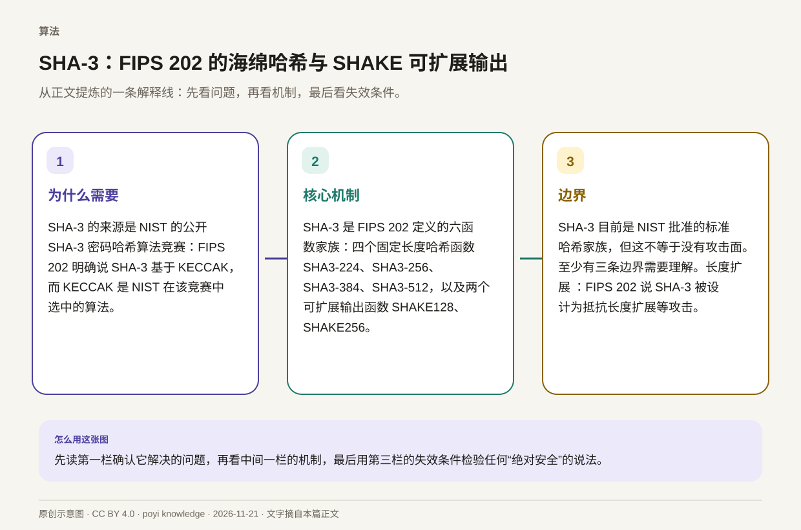
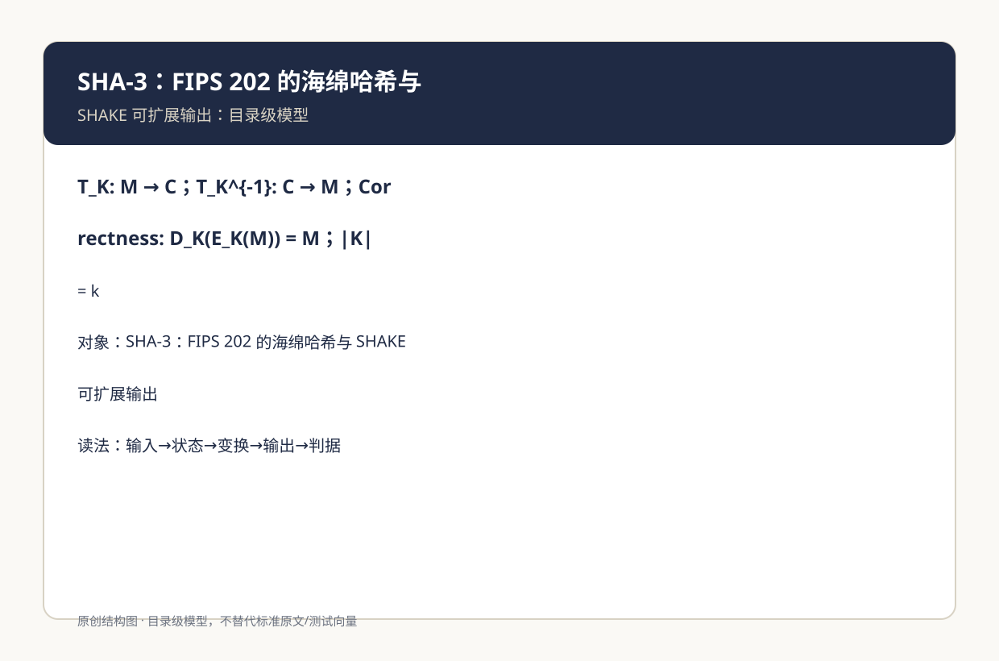

原理与机制
算法：SHA-3 与 Keccak（SHA-3）。SHA-3 是 FIPS 202 定义的六函数家族：四个固定长度哈希函数 SHA3-224、SHA3-256、SHA3-384、SHA3-512，以及两个可扩展输出函数 SHAKE128、SHAKE256。它们都建立在 KECCAK-p[1600,24] 置换上：状态是 5×5 个 64 位 lane，共 1600 位；置换迭代 24 轮。SHA-3 采用海绵构造。设 rate 为 r 位、capacity 为 c 位，r + c = 1600。吸收阶段把输入按 r 位分块：每块与状态前 r 位异或，然后执行一次 KECCAK-p[1600,24]；挤出阶段从状态前 r 位读取输出，若还需要更多位，再执行一次置换并继续读取，直到达到请求长度。capacity 不直接参与输入或输出，是海绵的安全参数。六个函数的 rate/capacity 为：
| 函数 | rate（位） | capacity（位） | 输出 |
|---|---|---|---|
| SHA3-224 | 1152 | 448 | 224 位 |
| SHA3-256 | 1088 | 512 | 256 位 |
| SHA3-384 | 832 | 768 | 384 位 |
| SHA3-512 | 576 | 1024 | 512 位 |
| SHAKE128 | 1344 | 256 | 任意 d 位 |
| SHAKE256 | 1088 | 512 | 任意 d 位 |
填充使用 pad10*1：在消息后追加 1、若干 0 和最后的 1，使总长度成为 rate 的整数倍。SHA-3 还在消息后追加两位或四位域后缀：SHA3-224/256/384/512 追加 01，SHAKE128/256 追加 1111；后缀把哈希与 XOF 的输入放进不同域。KECCAK-p 的每一轮依次执行五个步骤：θ 做列奇偶混合，ρ 在 lane 内旋转，π 重排 lane，χ 做行内非线性混合，ι 异或轮常量。KECCAK-p[1600,24] 使用 24 个 64 位轮常量，从 0000000000000001 到 8000000080008008；ρ 的旋转量与 π 的 lane 重排由固定表给出。state 的 lane 按小端字节序映射到消息/输出字节：一个 8 字节块的第 0 个字节进入 lane 的最低字节。SHA3-224/256/384/512 输出固定 224/256/384/512 位摘要；SHAKE128/SHAKE256 可以输出任意 d 位。输出越短，SHAKE 的碰撞/原像强度越低；这部分由 FIPS 202 的安全强度表给出。

为什么重要
SHA-3 的来源是 NIST 的公开 SHA-3 密码哈希算法竞赛：FIPS 202 明确说 SHA-3 基于 KECCAK，而 KECCAK 是 NIST 在该竞赛中选中的算法。Keccak 参考文档把 Keccak 定义为以 Keccak-f 置换和 pad10*1 为基础的海绵函数族；rate 与 capacity 的选择决定安全强度。海绵与 SHA-2 的 Merkle-Damgård 迭代不同：SHA-2 把链接值直接作为下一块输入并最终作为摘要，SHA-3 则把状态分成 rate 与 capacity，只从 rate 部分吸收/挤出，最终输出由状态挤出而不是直接暴露链接值。这种结构假设上的差异，使 SHA-3 在设计上能抵抗长度扩展等对 Merkle-Damgård 构造成立的攻击。capacity 是安全参数：capacity 越大，rate 越小，通用攻击的复杂度上界越高。SHA3-256 的 c=512 位，SHA3-512 的 c=1024 位。FIPS 202 表 4 给出的安全强度为：SHA3-224 112 位碰撞/224 位原像，SHA3-256 128/256，SHA3-384 192/384，SHA3-512 256/512；SHAKE128/256 的碰撞强度为 min(d/2,128)/min(d/2,256)，原像强度为 min(d,128)/min(d,256)。这些数字是分析与标准政策的结果，不是永远安全的数学证明；Keccak 的安全声明以 capacity 为核心，通用攻击受 capacity 限制，但这同样不是对具体密码分析的证明。XOF 是 SHA-3 相对 SHA-2 的新能力：SHAKE 可以按需输出任意长度，不必先固定摘要长度再截断。代价是 XOF 的输出长度不影响已经产生的前缀：SHAKE128(M, d) 是 SHAKE128(M, d+e) 的前缀，这与固定长度哈希的行为不同。域后缀则保证 SHA-3 哈希、SHAKE、RawSHAKE 等不同用途的输入不会互相混淆。
应用与实例
SHA3-224/256/384/512 是 NIST 批准的可用于所有哈希函数应用的哈希函数。SP 800-131A Rev.2 的表 8 明确把 SHA-3 家族列为可用于所有哈希函数应用；SHAKE128/256 是批准的可扩展输出函数，其具体用途由 NIST 特别出版物规定。SHAKE 的一个直接用途是 XOF：需要任意长度输出时，可以调用 SHAKE128 或 SHAKE256。SP 800-185 在 SHA-3 之上定义了 cSHAKE、KMAC、TupleHash 与 ParallelHash 四类派生函数，每类都提供 128 位与 256 位安全强度；KMAC 是 Keccak 消息认证码，提供带密钥的完整性与认证，属于 SHA-3 派生函数而不是 SHA-3 哈希本身。HMAC 也可以使用 SHA-3。FIPS 202 表 3 给出 HMAC-SHA3 的输入块长 B，它等于该 SHA-3 哈希的 rate（以字节计）：SHA3-224 为 144 字节、SHA3-256 为 136 字节、SHA3-384 为 104 字节、SHA3-512 为 72 字节。B 不是摘要长度；例如 SHA3-256 的 B=136 字节，对应 rate=1088 位。

边界与攻击面
SHA-3 目前是 NIST 批准的标准哈希家族，但这不等于没有攻击面。至少有三条边界需要理解。长度扩展：FIPS 202 说 SHA-3 被设计为抵抗长度扩展等攻击。它与 Merkle-Damgård 哈希不同，不能把经典的 H(M || pad(M) || X) 长度扩展直接套用到 SHA-3 上；这是因为海绵只从 rate 部分吸收/挤出，capacity 不直接暴露。容量限制：海绵的安全强度受 capacity 限制；把 SHAKE 的输出加长不会把安全强度提高到容量允许的上界以上。SHAKE128 的碰撞安全强度上限是 128 位，SHAKE256 是 256 位；输出长度 d 很小时，碰撞强度按 min(d/2, …) 下降。XOF 的相关输出：SHAKE 的输出长度不影响已产生的前缀。应用不能把 SHAKE 当作可随意改变输出长度的哈希：如果协议把输出长度当作安全参数，较长的输出会包含较短输出的全部比特，可能破坏域分离或密钥派生的假设。域/rate 误用：域后缀或 rate 用错会得到不同的输出。本批次把 SHA3-256 的域后缀换成 SHAKE 的 1111 后，得到的是 SHAKE256("abc", 32) 的值 483366601360a8771c6863080cc4114d8db44530f8f1e1ee4f94ea37e78b5739，而不是 SHA3-256("abc")。这类错误不会给出接近正确的结果，而是完全不同的输出。最后，NIST 的批准是标准政策，不是数学证明；具体应用仍要按容量、输出长度和域分离选型，不能把 SHA-3 当作永远安全的保证。
历史与背景
- 2011 年 1 月 14 日：Keccak 参考文档版本 3.0 发布，定义了 Keccak 海绵函数族与 Keccak-f 置换。- SHA-3 竞赛：NIST 举行公开的 SHA-3 密码哈希算法竞赛，最终选中 KECCAK；FIPS 202 的说明记载了这一结果。- 2015 年 8 月：FIPS 202 发布，标准化 SHA3-224/256/384/512 与 SHAKE128/256。- 2016 年 12 月：SP 800-185 发布，规定 cSHAKE、KMAC、TupleHash 与 ParallelHash 四类 SHA-3 派生函数。- 2019 年 3 月：SP 800-131A Rev.2 发布，表 8 给出 SHA-3 家族的批准状态。
逐步示例与核验
复算示例
取标准或公开测试向量中的一组参数，按“输入—执行—输出”记录：先写出该条目的形式式 (h=H(M),\quad H:{0,1}^{*}\to{0,1}^{n})；再按规范顺序执行每一步，最后把输出与独立实现或标准向量逐字节对照。若没有可引用的数值向量，就只记录结构步骤，不伪造输出。
参考出处
- Wikipedia search entry for SHA-3 与 Keccak. https://zh.wikipedia.org/w/index.php?search=SHA-3%20%E4%B8%8E%20Keccak
- Handbook of Applied Cryptography (Menezes, van Oorschot, Vanstone). https://www.cacr.math.uwaterloo.ca/hac/